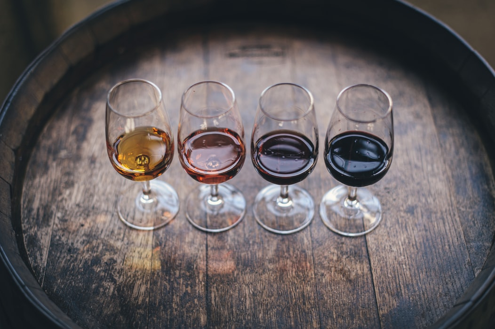

Life is too short to drink bad wines. Therefore, I give you this list to help you fully enjoy your wine time. Never in vain, always in wine, like French people say, but only in good wines, I think.Les cuvées des vins rosés sont généralement fraîches, fruitées et rafraîchissantes. Certaines peuvent être plus corsées avec à la fois de la fraîcheur, de la souplesse, du fruité et du corps. Aussi flatteurs à l'œil qu'au nez ou en bouche, les rosés sont des vins que l'on appréciera rafraîchis, servis entre 8 et 10°C. Frais et fruité, le vin rosé est donc idéal pour les apéritifs entre amis ou les barbecues de l’été.
Découvrez notre sélection de champagnes étoilés et de grands vins pour Noël et les fêtes de fin d’année. Des vins à offrir ou à déguster et qui rehausseront à coup sûr vos menus de fête. Vin effervescent festif par excellence, le champagne pourra accompagner vos apéritifs ainsi que tout un repas. Il pourra s’adapter aussi bien à vos plats de poissons et fruits de mer qu’aux viandes, gibiers, fromages ou desserts à base de fruits.
Notre sélection de grands vins rouges sera parfaite à partager pour de grandes occasions : Margaux, Saint-Emilion, Saint-Estèphe, Pessac-Léognan, Haut-Médoc... Quant à notre sélection de vins blancs : Sancerre, Sauternes, Pessac-Léognan, Châteauneuf-du-pape, Monbazillac... elle saura ravir vos papilles.
Retrouvez toute notre sélection de vins et champagnes pour les fêtes à prix préférentiels sur notre vente privée! Still, I can be wrong when it comes to personal taste. In order to be fair, I will add a WARNING notice to some wines with too strong or a bit weird character. But don't forget, they are anyway my winners too. Santé!